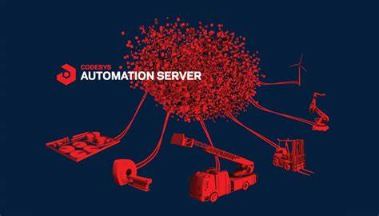

¿Qué es un Automatizador de desarrollo WEB?
Los automatizadores de desarrollo web son herramientas que simplifican las tareas comunes en el proceso de desarrollo web. Estas tareas pueden incluir la minificación y concatenación de archivos CSS y JavaScript, la optimización de imágenes, la recarga automática del navegador durante el desarrollo y mucho más. Estos automatizadores permiten a los desarrolladores automatizar estas tareas, lo que ahorra tiempo y reduce la posibilidad de errores humanos.
¿Cómo funciona?
Actualmente, en el ecosistema Javascript (o en el mundo del desarrollo web en general), es muy común utilizar estos automatizadores para, entre otras cosas, agilizar el proceso de creación de una aplicación web con unos pocos comandos, realizando de forma automática todas esas tareas tediosas y repetitivas, alcanzando nuestro objetivo de forma más rápida y con una mejor experiencia de desarrollador.
¿Para qué sirve un Automatizador de desarrollo WEB?
Los automatizadores de desarrollo web son herramientas que simplifican las tareas comunes en el proceso de desarrollo web. Estas tareas pueden incluir la minificación y concatenación de archivos CSS y JavaScript, la optimización de imágenes, la recarga automática del navegador durante el desarrollo y mucho más. Estos automatizadores permiten a los desarrolladores automatizar estas tareas, lo que ahorra tiempo y reduce la posibilidad de errores humanos.
Algunas de esas tareas podrían ser las siguientes:
- ApacheCreación del proyecto y su gestión (gestionado con NPM)
- Actualización y mantenimiento de dependencias (gestionado con NPM)
- Servidor web local de desarrollo
- Recarga automática del navegador
- Compilación de código SCSS a CSS
- Minificación de código CSS y JavaScript
¿Qué se entiende por desarrollador fullstack y cuales erian las habilidades basicas que debe poseer, cuales serian las herramientas minimas que debe saber usar para desempeñar el rol cómo programador?
Un desarrollador Full Stack es un profesional que puede manejar tanto el desarrollo de la parte frontal (Front-End) como la parte trasera (Back-End) de una aplicación web. Esto significa que pueden crear interfaces de usuario, escribir APIs, trabajar con bases de datos y también manejar la implementación y configuración de la infraestructura del servidor. Las habilidades básicas que un desarrollador Full Stack debe poseer incluyen: Front-End: Conocimientos de HTML, CSS y JavaScript son esenciales. También es útil tener experiencia con frameworks y bibliotecas como React, Angular o Vue.js. Back-End: Debe tener experiencia con al menos un lenguaje de programación de back-end como Node.js, Python, Ruby, Java o PHP. También debe entender cómo diseñar y manejar bases de datos usando SQL o NoSQL. Control de versiones: Debe estar familiarizado con sistemas de control de versiones como Git. HTTP y REST: Debe entender los principios de HTTP y REST, ya que son fundamentales para la comunicación entre el cliente y el servidor. Testing: Debe ser capaz de escribir pruebas unitarias y de integración para su código. DevOps: Debe tener alguna experiencia con la implementación y configuración de servidores. El conocimiento de tecnologías de contenedores como Docker y orquestadores como Kubernetes es muy útil. Las herramientas mínimas que un desarrollador Full Stack debe saber usar incluyen: IDEs: Como Visual Studio Code o IntelliJ IDEA. Control de versiones: Como Git y GitHub. Línea de comandos: Debe estar cómodo usando la línea de comandos para tareas como la gestión de archivos y la ejecución de scripts. Postman: Para probar APIs. Navegadores web: Debe entender cómo usar las herramientas de desarrollo de los navegadores para depurar el código del lado del cliente. Frameworks y bibliotecas: Como React, Angular, Express.js, Django, Flask, etc. Bases de datos: Como MySQL, PostgreSQL, MongoDB, etc. Herramientas de DevOps: Como Docker, Kubernetes, Jenkins, etc.